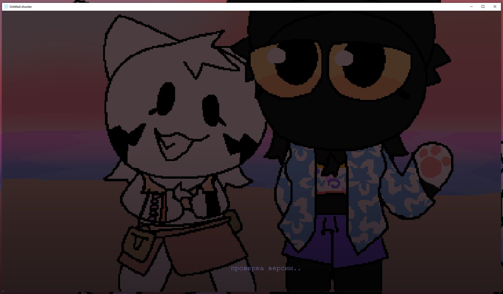
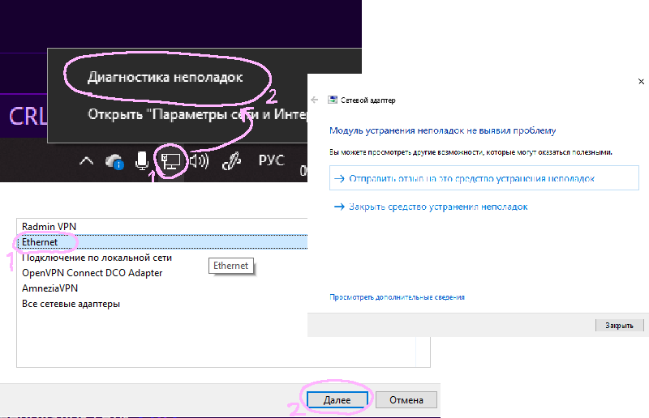
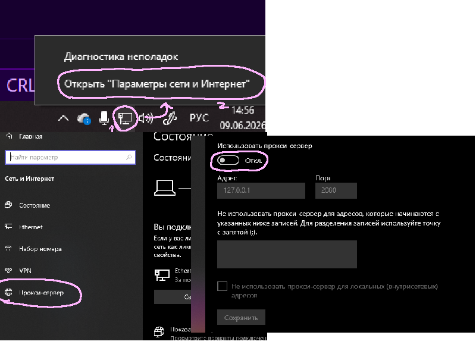

ошибка со входом в игру

иногда возникают неполадки при входе в игру. она долго грузит и не даёт пройти дальше. было такое? тогда читайте статью дальше. в ней вы узнаете способы устранения неполадок.
в статье будет расписано немного об ошибке и способы исправления
причины возникновения
чаще всего ошибка возникает при нестабильном интернет соединении, которое чаще всего вызывается включенным VPN, прокси и средствами обхода блокировок.
способы исправления
попробуйте сделать диагностику неполадок сети. может, это поможет.
для начала нажмите ПКМ по значку интернета на панели задач, а затем "диагностика неполадок". там вам предложат выбрать сетевой адаптер для диагностики. чаще всего, это "Ethernet". жмите на него, а затем Далее. ждите, пока закончится диагностика, после чего будет предложено предпринять действия.
если там написано "модуль устранения не выявил проблему", а игра по прежнему не работает, идем далее.

давайте попробуем выключить прокси. для этого снова жмём ПКМ по значку интернета на панели задач, но теперь "Параметры сети". там вы нажимаете на вкладку "Прокси", а затем переключаете флажок "Использовать прокси-сервер" на выключенное положение.
если же снова не помогло, то попробуйте воспользоваться DNS соединением от Google :: в строке "Адрес" введите 1.1.1.1 , либо 8.8.8.8 . зачастую, это помогает, но если не помогло, то двигаем далее.

VPN сервисы и обходники тоже могут повлиять на вход игры. попробуйте выключить абсолютно все VPN и обходники на компьютере. если же и это не помогло, то перезапустите компьютер.
в статье были собраны лишь некоторые способы, помогающие устранить ошибку входа в игру. попробуйте поискать решение в интернете. но помните одно :: если не удаётся войти в сервисы Google - не получится войти и в Untitled Shooter, поскольку они тесно связаны друг с другом. состояние игры также публикуется в Telegram каналах разработчика и игры.
ссылки
Telegram игрыTelegram Нилла